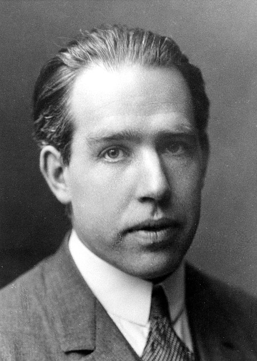

Famous Physicists
 Galileo Galilei
Galileo Galilei
Foundations of modern experimental physics.jpg) Isaac Newton
Isaac Newton
Laws of motion and gravity Michael Faraday
Michael Faraday
Electromagnetism and electric motors James Clerk Maxwell
James Clerk Maxwell
Electromagnetic field theory Marie Curie
Marie Curie
Radioactivity.jpg) Albert Einstein
Albert Einstein
Theory of relativity and photoelectric effect
Niels Bohr
Atomic structure and quantum theory.jpg) Erwin Schrödinger
Erwin Schrödinger
Quantum Mechanics C. V. Raman
C. V. Raman
Raman Effect Stephen Hawking
Stephen Hawking
Black holes and cosmology